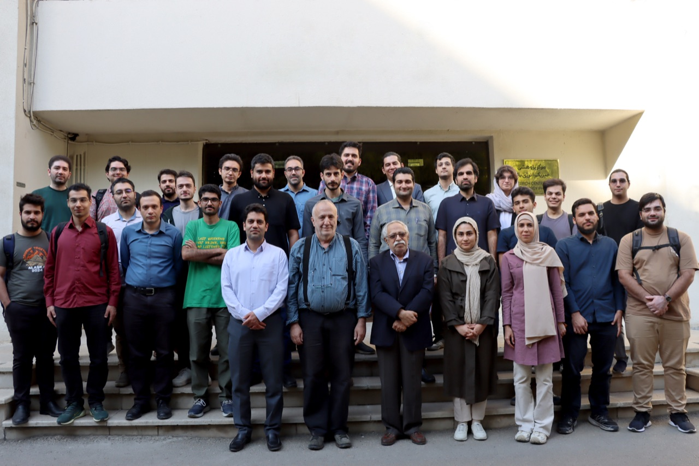

فعالیتهای علمی
گروهها و محورهای پژوهشی مرکز
تحقیقات در مرکز فیزیک انرژی بالا در سه شاخه اصلی نظری، تجربی و کیهانشناسی با مشارکت پژوهشگران و اساتید سازماندهی شدهاند.

اعضای مرکز RCHEP
۱. فیزیک ذرات تجربی (Experimental Particle Physics)
همکاری در آزمایشگاه بینالمللی سرن و آشکارساز CMSآزمایشگاه سرن (CERN) در ژنو سوئیس، بزرگترین آزمایشگاه فیزیک ذرات جهان است که به کاوش در کوچکترین اجزای ماده از طریق شتابدهنده بزرگ هادرونی (LHC) میپردازد. گروه فیزیک ذرات تجربی مرکز RCHEP با مشارکت در همکاری بینالمللی CMS (Compact Muon Solenoid) بر موضوعات زیر تمرکز دارد:
- تحلیل دادههای برخوردهای پرانرژی پروتون-پروتون در انرژی مرکز جرم ۱۳.۶ تراالکترونولت
- جستوجوی ذرات فراتر از مدل استاندارد (BSM)، بوزونهای هیگز اضافی و ماده تاریک
- مطالعه فیزیک کوارک تاپ و بوزونهای الکتروضعیف با دقت بالا
- توسعه نرمافزارهای پردازش دادههای توزیعشده (WLCG) و روشهای یادگیری ماشین در بازسازی ذرات
- تحقیق و توسعه در سختافزار آشکارسازها و ارتقای فاز ۲ (High-Luminosity LHC)
۲. فیزیک ذرات نظری (Theoretical High Energy Physics)
نظریه میدانهای کوانتومی، ریسمان و هولوگرافیفیزیک ذرات نظری به مطالعه ساختارهای بنیادین، قوانین بنیادین طبیعت و ارتباط بین مکانیک کوانتومی و گرانش میپردازد:
- نظریه میدانهای کوانتومی تطبیقی (CFT) و تغییر شکلهای حلپذیر مانند $T\bar{T}$-deformation
- دوگانگیهای هولوگرافی (AdS/CFT) و اتصال نظریه ریسمان به فیزیک پدیدههای قویجفت
- اطلاعات کوانتومی و ساختار فضازمان (درهمتنیدگی هولوگرافیک، پارادوکس اطلاعات سیاهچاله و Petz Map)
- نظریه میدان در فضازمانهای خمیده و فضازمان دیسیتر (de Sitter spacetimes)
- پدیدهشناسی نوترینوها، نقض تقارن CP و مدلهای ابرتقارنی
۳. کیهانشناسی و گرانش (Cosmology & Gravitation)
کیهان اولیه، ماده و انرژی تاریک و امواج گرانشیکیهانشناسی پلی میان دنیای ذرات بنیادی در لحظات آغازین بیگبنگ و تحول بزرگمقیاس ساختار عالم در حال حاضر است:
- مدلهای تورم کیهانی و تولید اختلالات اولیه چگالی و امواج گرانشی اولیه
- ماهیت انرژی تاریک و مدلهای گرانش تعمیمیافته (Modified Gravity)
- اخترفیزیک ذرات و رصد فورانهای پرتو گاما (GRBs) به عنوان معیارهای کیهانشناختی
- سیاهچالههای نخستین به عنوان کاندیدای ماده تاریک
- تابش زمینه کیهانی (CMB) و ساختارهای مقیاس بزرگ کیهانی (LSS)